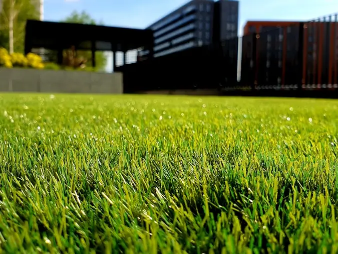

Artificial Turf
Using Artificial Turf Around Pools and Patios
The middle of a panel looks after itself. Nearly everything worth knowing happens in the last six inches.
Green next to grey is a detailing job
Turf beside paving is one of the most common combinations in a South Florida yard and one of the most commonly botched. The panel itself is rarely the problem — it is manufactured, it arrives consistent, and the middle of it behaves the same on every property.
What varies is the six inches where it meets something else: the pool surround, the terrace, a planting bed, a fence post, a threshold. Every complaint we hear about a turf-and-paving combination is a complaint about that line — it lifted, it caught a toe, water sits along it, debris collects in it, the two surfaces are at different heights.
So this guide spends most of its length on the junction. If you read only one section, read the edges.
First question
Where it works, and where it does not
Strong cases beside hard surfaces
The strip that never established. A band of ground between a terrace and a boundary, shaded for part of the day and walked across constantly, is the classic case. Sod has usually been replaced there once already.
A deliberate green shape inside hardscape. Where paving surrounds an area on two or three sides, the paving itself supplies the firm perimeter a panel needs, and the outline reads as designed rather than left over.
Beyond the splash zone. A lawn area that starts a few feet back from a pool surround, giving somewhere soft to sit or for children to play without being the wet route.
Side returns and gate runs. Narrow, shaded, high-traffic, and awkward to maintain. Turf solves several problems there at once.
Approach with caution
Wide unshaded areas. The heat section below is not a disclaimer, it is the main trade-off, and it gets worse the more square footage sits in unbroken afternoon sun. This is the version of the installation people most often wish they had made smaller.
Ground that already holds water. Turf over a low spot produces a green low spot. The drainage has to be fixed first, as part of the work, or not at all.
Directly beneath a messy canopy. Debris itself is manageable; what tires a panel out is anything left to rot down between the blades. Under dense planting that becomes a standing chore rather than an occasional one.
Right at a fire feature or grill. Synthetic fibre and radiant heat do not mix. A hard surface between the two is planned rather than discovered.
The part that matters
The edges, in detail
Five junctions, each with a different requirement. This is where a good installation and a cheap one part company.
Turf to paving
The two finished surfaces have to land at exactly the same height. Half an inch of step is enough to trip somebody and enough to rock a chair leg; half an inch of gap becomes a debris trap and the place a corner starts peeling away. Because the paving is also what the turf gets fixed down to, the levels for both have to be worked out in the same exercise. An installer who quotes turf without asking a single question about the adjacent paving has not understood the job.
Turf to a pool surround
Everything above, plus water. The deck has to keep shedding its water away from the pool and into ground that can receive it — not into the turf base because that was the nearest soft thing. Splash-out and pool water land on the turf routinely, so the strip nearest the water gets rinsed as part of looking after the surround. Treat it as one continuous surface with two finishes, not as two separate projects that happen to touch.
Turf to a planting bed
Soft ground on one side means there is nothing to anchor to unless a header or restraint is installed. It also stops mulch and soil migrating into the pile, which is the second most common complaint after lifting.
Turf to a fence or wall
Posts, gates and changes in level all have to be cut around individually. It is fiddly, it is where a rushed job shows, and it is worth walking the line on site rather than assuming a straight run.
Turf to a threshold or step
Where a panel meets a door or a level change, the height relationship is a safety detail rather than a cosmetic one. It gets resolved on the drawing, before anything is dug.
One question that reveals a lot
Ask any installer: "What is the turf anchored to along each edge?" A specific answer — the paving, a header, a restraint, a wall — means they have thought about your property. A general answer about staples and glue means they have thought about the middle of the panel.
Under the green
Why the invisible half decides the visible half
Turf is a finish. Underneath it is a small piece of groundwork, and that groundwork is what determines whether the panel is still flat and still draining in five years.
The organic material comes out — sod, roots and topsoil — because anything left to decompose settles unevenly and shows through the surface as dips. An aggregate layer goes in and gets compacted, which is what stops footprints becoming permanent. And the whole thing is graded to a fall rather than levelled flat, because water passing through the backing has to travel somewhere once it reaches the base.
Next to a pool that last point matters twice over, since the surround is already shedding water in the same direction. The two systems need to agree, and that agreement is made at design stage. Our own sequence is on the artificial turf page.

Said plainly
Heat, and the claims to ignore
Put your hand on a turf panel and on the sod next to it at three in the afternoon and the difference is obvious. Living grass runs a cooling mechanism — it moves water up and lets it evaporate — and a manufactured surface has nothing equivalent. Nobody is hiding a defect here; it is simply what the material does, and a supplier who lets you find out in July has done you a disservice.
Beside a pool it deserves specific thought, because people step onto it wet, barefoot and not paying attention, and because a paved surround is already hot. Putting the turf where there is shade for part of the afternoon does more than any product choice.
What genuinely helps: shade over the area, a rinse with a hose a few minutes before use, lighter infill tones, and siting the panel away from the hottest part of the afternoon.
What to disregard: any specific number of degrees claimed for a product sold as cool or cooling. Such a figure is meaningless without the conditions it was recorded under, and those conditions are rarely the ones in your yard. Ask to see what the maker actually publishes, and read what was tested, before letting a marketing claim decide anything.
Afterwards
What a poolside panel asks of you
Rinse the splash strip
Whatever is dissolved in pool water stays on the panel once the water evaporates. Running a hose over the strip closest to the water deals with it, and takes about as long as coiling the hose back up.
Do not let anything rot in place
Whatever falls on a panel and stays there eventually turns into the very stuff the excavation removed. Clearing it is a two-minute job with a blower and an unpleasant one if left for a season.
Lift the flattened areas
Anywhere feet or furniture press repeatedly, the blades stay down. Working a brush across them the wrong way stands them back up — the difference between a panel that still looks laid and one that shows its walking routes.
Check the perimeter now and then
Age announces itself at joins and boundaries long before it shows in the field. Spotting a corner that has begun to move is cheap; dealing with one after a guest has caught it is not.
None of that is gardening, and all of it is housekeeping. Turf is lower maintenance than a lawn beside a pool and it is not no maintenance, which is the honest version of a claim you will see made carelessly elsewhere.
Common questions
Turf beside water and paving
Does chlorinated or salt water damage artificial turf?
Splash-out and water carried on feet reach a poolside panel constantly, and the practical consequence is less about damage to the fibre than about what the water leaves behind as it dries. Rinsing the strip nearest the water with fresh water is the whole maintenance answer, and it is the same habit that looks after the paving beside it. If a supplier makes a specific claim about chemical resistance, ask for the manufacturer's own documentation rather than taking the claim from a brochure.
Will turf beside a pool be too hot to walk on?
In full afternoon sun, synthetic fibre gets hotter than living grass, because grass cools itself by releasing moisture and turf has no equivalent. It is inherent to what turf is, and any supplier worth dealing with will volunteer that before you buy. Shade over the area changes it far more than any product specification, a rinse a few minutes before use helps, and lighter infill tones help at the margins. It is also a reason to think carefully before putting turf where people will step off a hot deck expecting relief.
Can turf run right up to the coping?
It can, and it is worth understanding what that asks of the detail. Turf needs a firm edge to be anchored to, so something solid has to be there — the paving, a header or a restraint. The two finished surfaces have to agree on level so there is no lip. And the deck still has to shed its water outward to somewhere that can receive it rather than into the turf base as an afterthought. Where those three are handled the junction is invisible; where they are not, it is the first thing you notice.
Is turf a good idea for the strip between a patio and a fence?
That narrow strip is one of the strongest cases for it. It is usually shaded for part of the day, too small to mow comfortably, walked on more than it looks, and it is where sod has typically been replaced and lost more than once. The things to check are drainage — a narrow strip between two hard edges can be where water collects — and access, since it is often the route material comes through during any other work.
Panels beside paving turn up in every market we work in, though for different reasons: deep shade under mature canopy in Plantation, narrow side yards on newer developments in Pembroke Pines, and family yards in Coral Springs where the lawn lost to traffic rather than to shade.
Show us the strip that keeps failing
A free on-site visit will tell you whether turf is right for it, what the ground underneath needs first, and how the edge against your paving should be detailed.